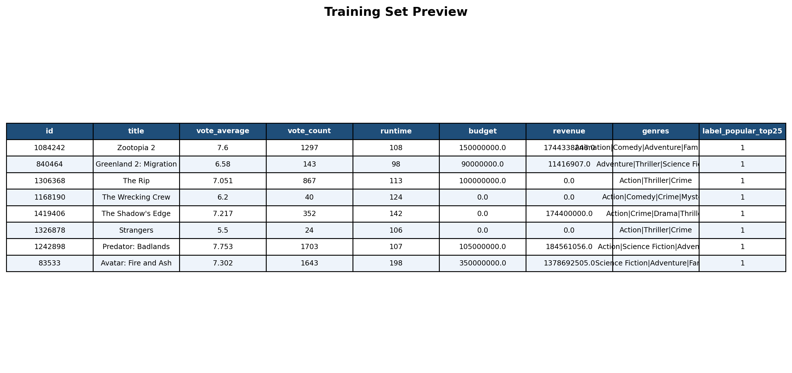
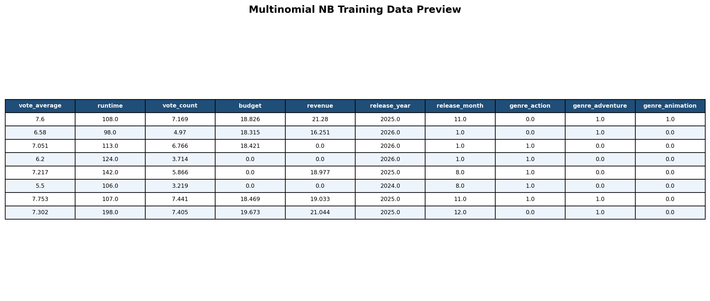
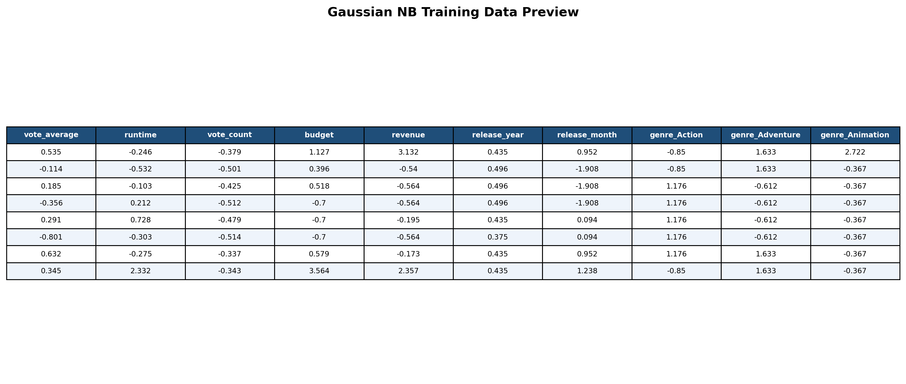
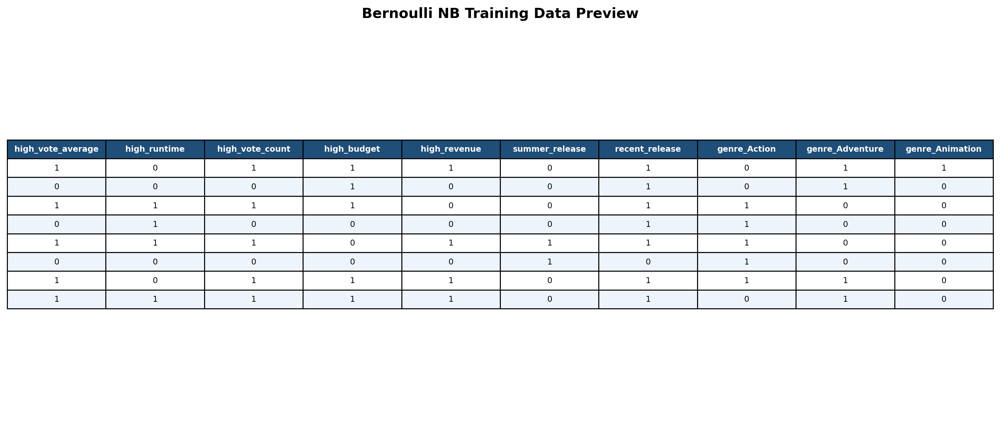
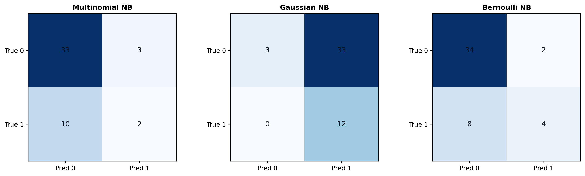

Naive Bayes
(a) Overview
Naive Bayes (NB) is a probabilistic classifier that estimates the probability of each class and then predicts the class with the highest posterior probability. The word naive refers to its core assumption that features are conditionally independent given the class. That assumption is often not perfectly true in real data, but NB is still widely used because it is fast, interpretable, and works well on many small and medium-sized datasets.
In general, NB is used when we want a simple baseline classifier, quick training time, and a model that handles many features efficiently. It is especially common in text classification, spam filtering, and categorical prediction tasks. For this project, NB is useful because the movie dataset mixes genre information with numeric and indicator-style variables, so we can compare how different NB flavors react to different feature formats.
| Variant | Best data type | How it behaves | When I would use it |
|---|---|---|---|
| Multinomial NB | Non-negative counts or frequencies | Works well when each column acts like a count contribution to the class. | Text counts, bag-of-words, or non-negative engineered feature totals. |
| Gaussian NB | Continuous numeric features | Assumes each feature is approximately Gaussian inside each class. | Continuous measurements such as runtime, revenue, or scaled numeric attributes. |
| Bernoulli NB | Binary 0/1 indicators | Focuses on whether a feature is present or absent. | Keyword presence, yes/no indicators, one-hot style feature sets. |
| Categorical NB | Discrete category codes | Treats each feature as belonging to one of several unordered categories. | Ordinally encoded categories such as low/medium/high bins or grouped labels. |
(b) Data Prep
Supervised learning requires labeled data, so I used label_popular_top25 as the target: 1
means the movie is in the top 25% of popularity and 0 means it is not. Before splitting the data, I
removed duplicate movie IDs so the same movie would not leak into both train and test sets. That step
reduced the dataset from 218 rows to 191 unique movies.
I then created one stratified train/test split with 143 training rows and 48 testing rows. The sets must be disjoint because the model should be evaluated on movies it did not train on; otherwise, the measured accuracy would be artificially optimistic. The split summary confirms 0 overlapping movie IDs between train and test.
- Modeling dataset: module3_modeling_dataset.csv
- Train/test split summary: train_test_split_summary.json
- Training sample: train_sample.csv
- Testing sample: test_sample.csv
Different NB flavors need different input frames, so I prepared three transparent versions of the same training data. Multinomial NB used non-negative numeric features plus genre token counts, Gaussian NB used standardized continuous numeric features plus genre indicators, and Bernoulli NB used binary flags such as high/low budget, high/low vote count, summer release, and genre presence.





(c) Code
All three NB pipelines were coded in Python in the same Module 3 script so the same cleaned data, duplicate removal, target label, and train/test split were used consistently.
- Module 3 code: 07_supervised_tmdb.py
- NB metrics table: nb_model_metrics.csv
(d) Results
The three Naive Bayes models produced clearly different behaviors on the same test set. Bernoulli NB was the strongest performer with 0.7917 accuracy, Multinomial NB reached 0.7292, and Gaussian NB dropped to 0.3125. That result makes sense because the binary indicator representation aligned better with the movie success target than the Gaussian assumption did.


Bernoulli NB confusion matrix: TN=34, FP=2, FN=8, TP=4. Multinomial NB confusion matrix: TN=33, FP=3, FN=10, TP=2. Gaussian NB confusion matrix: TN=3, FP=33, FN=0, TP=12.
(e) Conclusions
For this topic, Naive Bayes suggests that movie popularity is easier to classify when the input is expressed as presence/absence signals rather than only as continuous measurements. Genre membership, high-vs-low financial indicators, and release timing signals carried more useful classification information than the Gaussian assumptions captured. I also learned that the choice of NB flavor matters a great deal because the wrong feature format can sharply reduce performance.